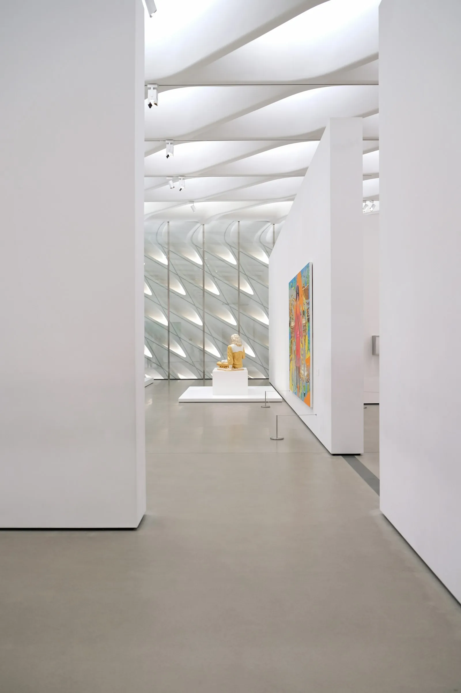

SFMOMA Guide: San Francisco's Modern Art Gem
· By GoldenPath Guide Editorial Team
When the San Francisco Museum of Modern Art finished its massive 2016 expansion, critics said it had "turned the city into a capital of art." More than double the gallery space, a skin-like textured facade — SFMOMA is now a San Francisco landmark and a pilgrimage site for artists and art lovers alike. Inside, the rooms run quiet and cool, and the daylight that slips through the facade’s rippled skin lands soft on the concrete.
Where to Find It
SFMOMA sits in SoMa (South of Market), downtown. One block from Yerba Buena Gardens, with Union Square close by, it's a short walk from the Montgomery Street BART/Muni station — easy to reach without a car.
Galleries You Shouldn't Miss
- Living Wall (Floor 3) — one of the largest public living walls in the U.S., with some 19,000 plants of 21 Bay Area-native species growing on the wall.
- Pritzker Center for Photography (Floor 3) — the largest dedicated photography gallery in the U.S., holding a collection of more than 17,000 works including Ansel Adams and Dorothea Lange.
- Sculpture Terrace (Floor 5) — outdoor terrace overlooking the SoMa skyline, with large-scale sculpture and a coffee stop at Café 5.
- 20th-Century Masterpieces (Floor 2) — Frida Kahlo's Frida & Diego Rivera, major works by Jackson Pollock and Mark Rothko, and Henri Matisse's Woman with a Hat.
Architecture & Free Days
Two of the museum's most surprising details are its windows and its restrooms. Along the windows, small built-in boxes make perfect perches for catching your breath between galleries. The restrooms are a different color on every floor — raspberry and chartreuse among them — so vivid they reset your brain. Settle into one of those little window seats on a gray afternoon and the fog-light pours in even and silvery, the city reduced to a slow hum. Free-entry highlights: first Thursday each month (10am to 9pm) admits you to the whole museum, and the first and second floors open free every day.
For Families
The Koret Education Center on Floor 2 runs family programs, and on Second Sundays the "Second Sundays for Families" series features hands-on play and art-making around a rotating theme. These sessions are free for kids and adults alike, so families with little ones should plan around them.
Come in on a weekday, when the galleries thin to a few unhurried shapes, and the art gets the room to itself.
Tickets, Free Days and Timed Entry
General admission runs about $30 for adults, with visitors 18 and under free — the family math beats nearly every peer museum. Timed-entry tickets book online; weekend slots sell out by Friday morning, while weekday afternoons after 2 p.m. usually show same-day availability. Free Family Days run periodically through the year with art-making workshops included; the museum's email list announces them first. Bay Area residents get periodic free-access days tied to community programs — check the calendar page before buying. Members ($110-plus annually) skip lines entirely and the membership pays off on the fourth visit. Photography without flash is allowed in most galleries; the special exhibitions sometimes restrict it — watch the doorway signs. Coat check is free, and the oversize-bag rules mean large backpacks check at the desk. Skip the 11 a.m. Saturday arrival; doors-open entry at 10 a.m. or the 3 p.m. lull halves the popular-gallery crowds.
Floors Worth Your Time
Seven gallery floors reward a plan. The second floor's Fisher Collection pairs postwar giants — Rauschenberg, Warhol, Serra — in skylit rooms that take 60 minutes alone. The fifth floor's photography galleries hold one of the nation's deepest collections; the rotating selections change quarterly. The seventh-floor rooftop sculpture garden (free with admission) frames the city through sculptural frames with a coffee cart in fair weather — the sunset hour slot photographs best. The fourth floor's media-arts and the third floor's design galleries suit shorter attention spans with interactive pieces. The Pritzker Center for Photography workshops run $15 to $25 and teach darkroom basics monthly. Audio guides cost $8 (free for members) and the 45-minute highlights tour covers the essentials. Budget three hours minimum; five covers it comfortably with a cafe break on the fifth-floor bridge.
Yerba Buena, Dining and Nearby Museums
The museum's ground-floor cafe serves salads and sandwiches at $14 to $20; the upstairs restaurant runs seasonal California plates at $25 to $40 with terrace seats worth requesting. The Yerba Buena Gardens across the street give the picnic alternative — the Whole Foods two blocks south supplies it under $15. The Contemporary Jewish Museum ($15) and the Museum of the African Diaspora ($12 to $15) sit within two blocks and pair into a three-museum day; the multi-museum math favors the SFMOMA-plus-one combo over all three. The cable-car turnaround at Powell and Market sits 10 minutes north; BART's Montgomery station exits two blocks east. The gift store's design section (free to enter) sells exhibition posters at $20 to $40 that beat generic souvenirs. Thursday-evening hours (open late) pair with the Mission's dinner rooms a 15-minute ride south.